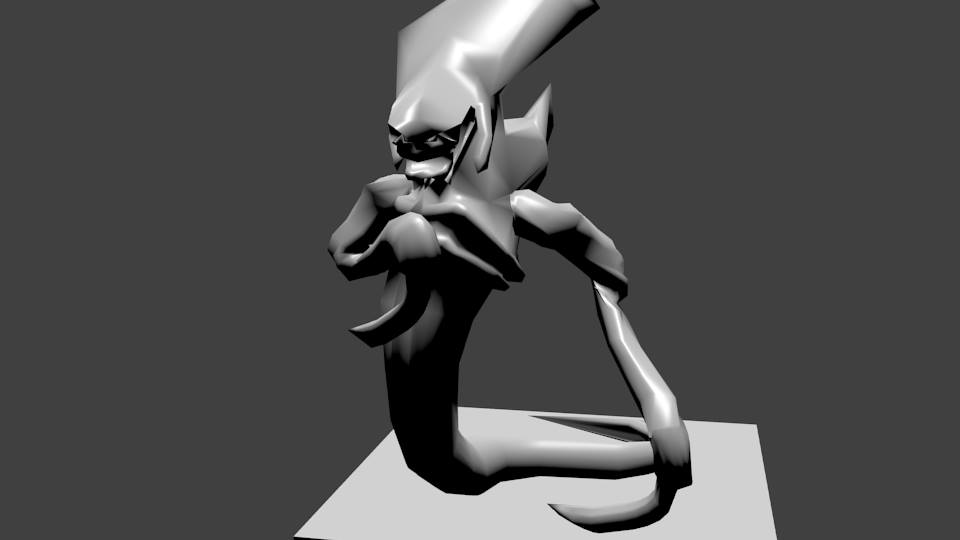
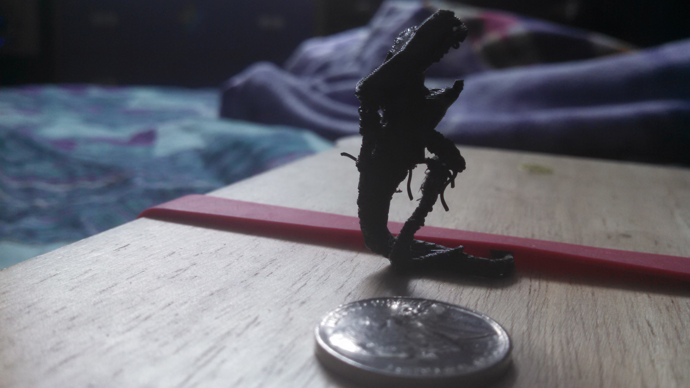
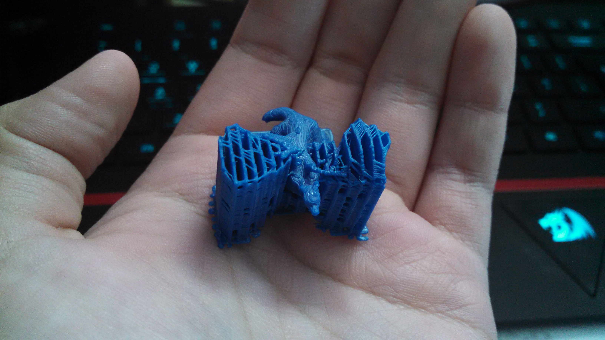

These are .stl format, have a base, and *should* be ready for 3D printing. All have less than 2000 poly-count (except for the hydralisk). They are based on the original game but aren't super accurate as I had only a week to create them. (I will be printing these myself at about .75"x.75" size later on)
Zerg Zergling download | Preview
Terran Siege Tank download | Preview
Zerg Hydralisk (unposed) download | Preview
Zerg Hydralisk (posed) download | Preview || Zerg Hydralisk download (3D print optimised) | Preview
Terran Battlecruiser download | Preview
Terran Marine download | Preview
Terran Dropship download | Preview
Protoss Zealot download | Preview || Protoss Zealot download (3D print optimised) | Preview
Hydralisk model in Blender:
Hydralisk 3D printed (no base, nickel for reference):
XMAR2017 It's on its way!
XAPR2017 Doesn't exist yet!
NOTE: (Only for Original & Angry Editions) Leave mirror modifier for plane on until finished with model. Press apply in the modifiers tab on the right to convert into editable points.
Drive Link for .blend (OLD, no enhanced horns/wings/extra horns/eyes/teeth/tail)
Stl File (OLD, no head tilt/eyes/teeth/extra horns)
Drive Link for .blend (OLD, no teeth/eyes)
Direct Download for .blend (OLD, no teeth/eyes)[BROKEN LINK]
Stl File (further editing may be needed for 3D printing)
The final product rendered in Blender:

First attempt at 3D printing a scale model with support structure cut off:
The tail and left front leg broke, but the leg was able to be glued back together. The wings also did not print right and the jaw fell off due to no support during printing.

Straight off printer with support structure still attached:
